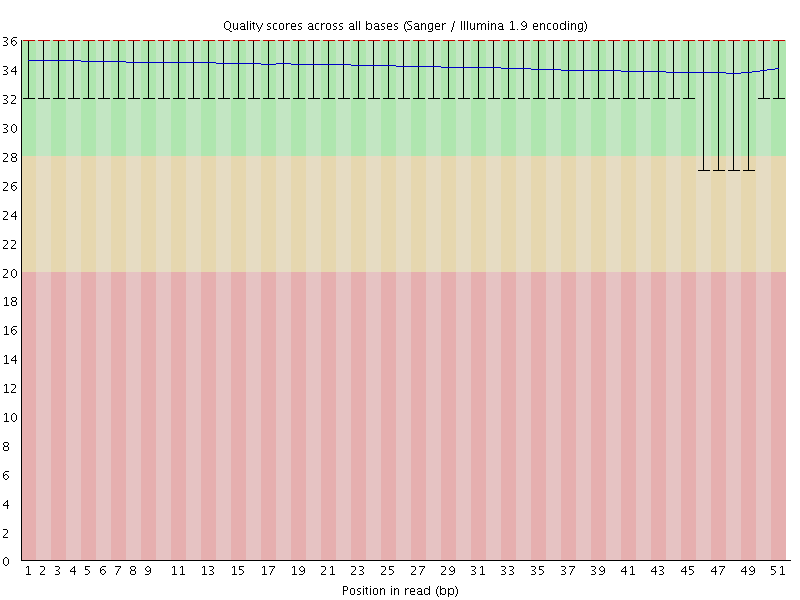
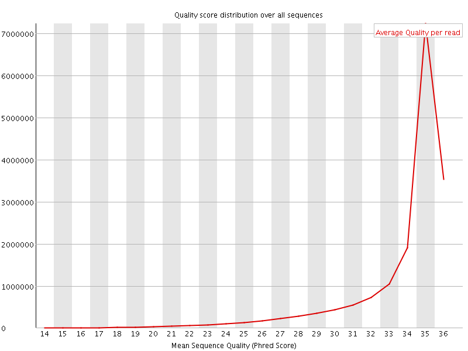
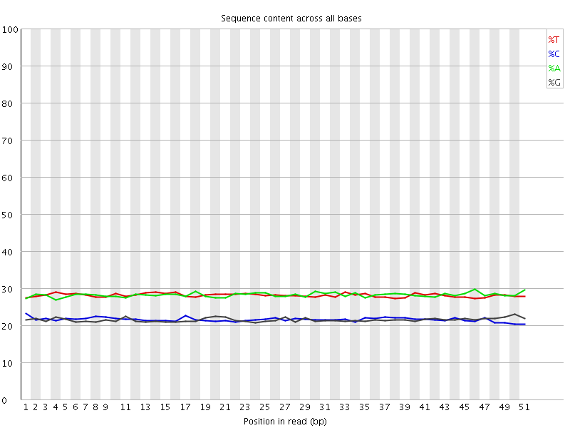
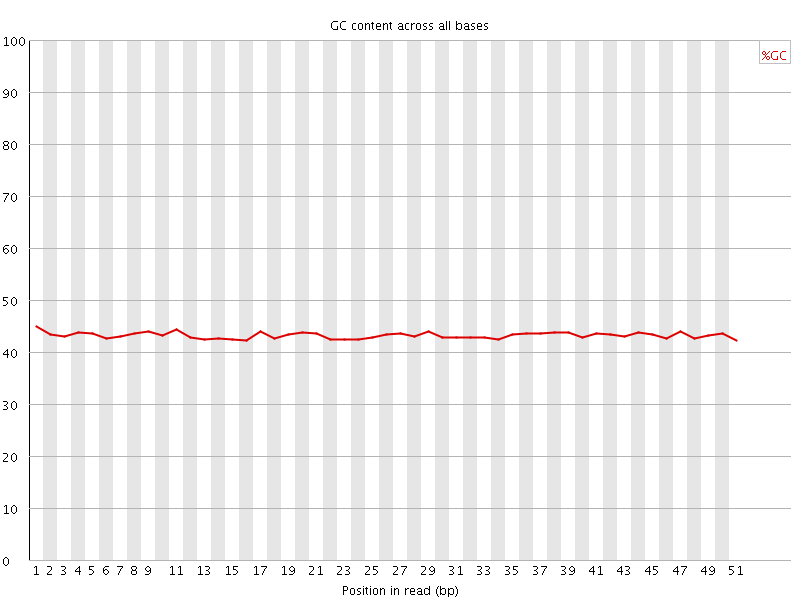
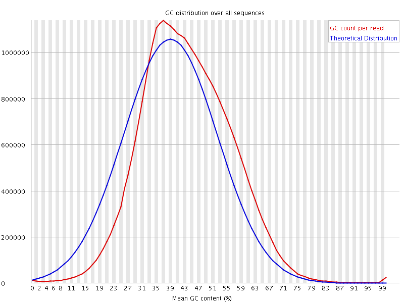
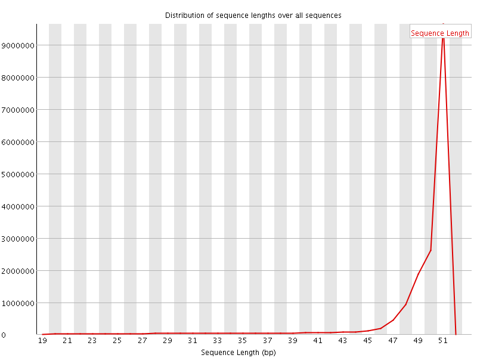
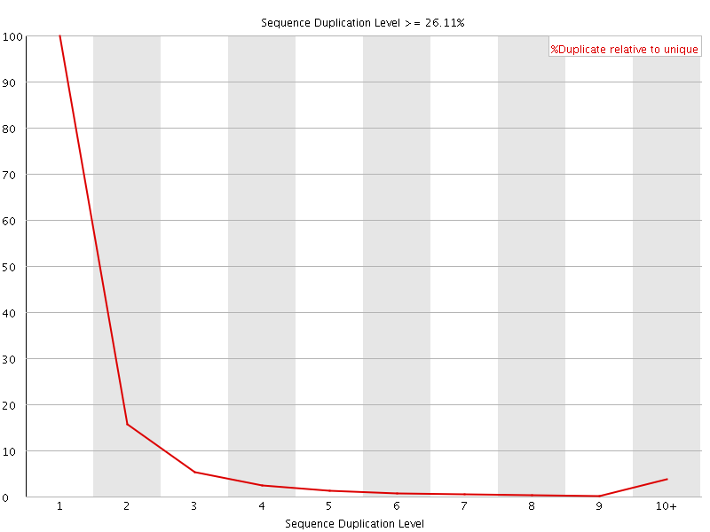
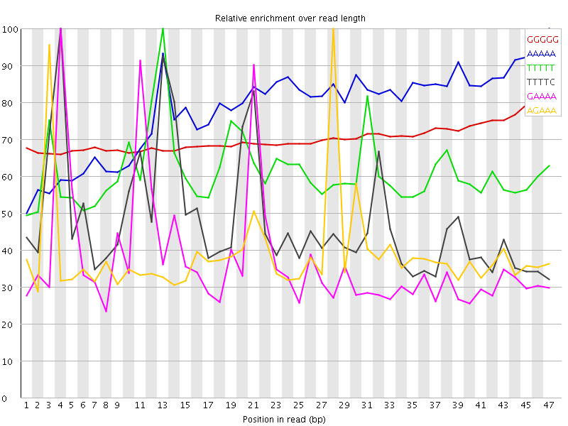

![[OK]](Icons/tick.png) Basic Statistics
Basic Statistics
| Measure | Value |
|---|---|
| Filename | 030-F0_S1_L002_R2_001_trimmed.fq.gz |
| File type | Conventional base calls |
| Encoding | Sanger / Illumina 1.9 |
| Total Sequences | 17015485 |
| Filtered Sequences | 0 |
| Sequence length | 20-51 |
| %GC | 43 |
Per base sequence quality

Per sequence quality scores

Per base sequence content

Per base GC content

![[WARN]](Icons/warning.png) Per sequence GC content
Per sequence GC content

Per base N content

Sequence Length Distribution

Sequence Duplication Levels

Overrepresented sequences
| Sequence | Count | Percentage | Possible Source |
|---|---|---|---|
| GGGGGGGGGGGGGGGGGGGGGGGGGGGGGGGGGGGGGGGGGGGGGGGGGGG | 17976 | 0.1056449463532776 | No Hit |
Kmer Content

| Sequence | Count | Obs/Exp Overall | Obs/Exp Max | Max Obs/Exp Position |
|---|---|---|---|---|
| GGGGG | 2023535 | 5.584484 | 7.931947 | 47 |
| AAAAA | 6517595 | 4.6273685 | 5.9430766 | 47 |
| TTTTT | 5200425 | 3.7504115 | 6.1203938 | 13 |
| TTTTC | 3444695 | 3.2301908 | 6.7172174 | 4 |
| GAAAA | 3376940 | 3.1455395 | 8.414311 | 4 |
| AGAAA | 3251250 | 3.0284624 | 7.7612333 | 28 |
| CCAGG | 1390215 | 2.890486 | 5.473831 | 35 |
| AAGAA | 2703655 | 2.5183907 | 5.35588 | 2 |
| GGAAA | 1922895 | 2.3499172 | 8.275939 | 20 |
| GAGAA | 1906805 | 2.330254 | 8.632282 | 27 |
| TTTCC | 1886700 | 2.3004751 | 5.1565733 | 22 |
| AAAAT | 3158405 | 2.2494338 | 5.918886 | 22 |
| TCCTC | 1409995 | 2.2354732 | 5.93191 | 24 |
| ATTTT | 3092405 | 2.2231963 | 5.2291102 | 2 |
| GGTGG | 1042830 | 2.20049 | 5.302146 | 18 |
| CCACC | 1064810 | 2.188279 | 6.6647773 | 8 |
| TTCCT | 1786615 | 2.1784403 | 5.1431236 | 23 |
| GAGGA | 1331470 | 2.1347818 | 5.0181937 | 2 |
| TGGAA | 1709275 | 2.0954032 | 5.7317295 | 19 |
| TTCAG | 1645070 | 2.0112662 | 5.6025724 | 15 |
| TGAAA | 2129680 | 1.9899625 | 6.7000775 | 10 |
| CTGAA | 1625620 | 1.9812783 | 7.938156 | 9 |
| TCCAC | 1248785 | 1.973699 | 5.564879 | 35 |
| AAATG | 2063615 | 1.9282316 | 6.8339734 | 23 |
| CATTT | 2058395 | 1.9241875 | 6.929372 | 1 |
| AAAAC | 2006430 | 1.8580897 | 6.4179688 | 5 |
| GTGGA | 1082750 | 1.7414417 | 6.447204 | 47 |
| TGAGA | 1407850 | 1.7258859 | 8.016142 | 26 |
| CACCT | 1053770 | 1.6654786 | 5.1498775 | 9 |
| CCACT | 1044480 | 1.6507958 | 5.779942 | 36 |
| CATGG | 997790 | 1.5954777 | 6.1926184 | 17 |
| CAAGA | 1252155 | 1.5213386 | 5.6881733 | 1 |
| CATCC | 938075 | 1.4826232 | 5.1353383 | 33 |
| AGTGG | 919145 | 1.4783076 | 5.7483892 | 46 |
| AATGA | 1577725 | 1.4742184 | 6.3381844 | 24 |
| ATGGA | 1183260 | 1.4505603 | 5.158992 | 18 |
| ATGAG | 1169875 | 1.4341516 | 7.6924305 | 25 |
| CACTT | 1174195 | 1.4272373 | 6.7785363 | 37 |
| ACTGA | 1166460 | 1.4216619 | 7.194744 | 8 |
| CTTGA | 1160080 | 1.4183161 | 6.301504 | 47 |
| AACTG | 1159315 | 1.4129536 | 7.163139 | 7 |
| AAACT | 1449350 | 1.3464017 | 5.850914 | 6 |
| AAATC | 1425165 | 1.3239344 | 6.059134 | 13 |
| AAGTG | 1059150 | 1.2984138 | 5.3109856 | 47 |
| ACTTG | 1049185 | 1.2827358 | 5.3243628 | 46 |
| AATCA | 1279100 | 1.1882446 | 5.8611774 | 14 |
| CGCCA | 474545 | 0.98092794 | 5.0725636 | 28 |
| CCTCG | 425640 | 0.8825937 | 5.351058 | 25 |